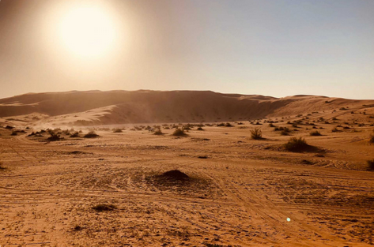

The Land of Festivals
Located at the very heart of Saudi Arabia, Qassim Province is a core agricultural
region of Saudi Arabia. It is famous for the production of dates along with
wheat, grapes, lemons, oranges, grapefruits, pomegranates, and a wide variety of
vegetables. The region is said to have over eight million palm trees and exports
more than 200,000 tons of dates worldwide. An annual date festival is held in the
capital city Buraydah after the harvest season. Different types of luxury dates,
as well as other date products, are showcased in this 35-day long festival that
attracts buyers and tourists in large quantities from the GCC region as well as
other countries. Due to its massive agricultural output, the Qassim province is
also referred to as the ‘alimental basket’ of Saudi Arabia.
Another interesting aspect of Qassim province is the number of festivals that
are held in the region. Being the richest region per capita in Saudi Arabia as
well as the 7th most populated region, Qassim province boasts over a hundred
events every year. No matter which time of the year you visit, you are sure to
find an interesting event taking place in the region. As per the Saudi
Commission for Tourism and National Heritage (SCTA), in terms of hosting events
and festivals, the Qassim region is the number one province in Saudi Arabia.
History
Mention of Unaizah as a desert watering hole is found in pre-Islamic folklore
and poetry. The famous Arabian knight and poet Antarah bin Shaddad also
mentioned the city of Uyun AlJiwa, a city situated 30 km north of Buraydah.
Sakhrat Antarah (Antarah's rock) is a popular tourist attraction in the region.
This boulder is said to be the meeting point of Antarah bin Shaddad and Ablah.
Different Thamudic inscriptions have also been found in the region.
In the Islamic period, Qassim region gained importance due to the Zubaydah
Hajj Route that was constructed during the time of caliph Harun Al Rashid.
Reception areas and water holes were made available to the pilgrims in the
region of Qassim province. Being located in the Najd region of the Kingdom,
the province has historically been a center of agriculture, trade, and commerce.
It has also served as an important passageway and stopover point for pilgrims,
especially those coming in from the regions of Iraq and Persia.
Geography
Qassim province is located in the geographical center of Saudi Arabia. This region is called the Najd region. Saudi Arabia’s longest valley, the 600 km long Wadi al-Rummah crosses the province from the west towards the northeast. Even though this valley is mostly dry now but according to historians it used to be a major river that flowed from Makkah to the Arabian Gulf thousands of years ago. Due to this the region still has a generous amount of groundwater that helps make it one of the greenest regions in Saudi Arabia with an abundant agricultural yield. The climate of Qassim province is dry and hot just like most of the country.
Cultural Life
The province is full of life and color. With its rich ancient culture and active tourist events, it is a welcoming place for tourists. Since agriculture is such a main part of the economy of the region, it is one of the main occupation of the people living here. The people here are extremely hospitable and enjoy their festivals and events. The world’s largest camel market, the Al Qassim Camel Market offers a very unique, truly Saudi experience to visitors.

Popular Attractions
Agriculture and tourism are two cornerstones of this region. You even get an
opportunity to benefit from both in the form of agritourism. The farms and
orchards welcome tourists and provide them a unique opportunity to witness
the majestic palm groves and plantations. You can even buy the produce directly
from these farms.
The province has a rich history that can be witnessed in museums such as the
Buraydah Museum and the Aloqilat Museum. Nearby to the Buraydah Museum you
will find the lush green King Khalid Park and Garden. Entry to this park is
free of cost and you can relax, and spend quality time here. It also includes a
swimming pool and different activities are also organized in the park. Buraydah
Water Tower is a major landmark of the capital city of Buraydah. It even has a
viewpoint at the top floor that allows visitors to get an amazing birdseye view
of the city.
Unaizah, the second largest city of Qassim province hosts 12 tourist festivals
every year. The city’s trademark cultural festival is held bi-annually.
Al Bassam Mansion is one of the main tourist attractions in Unaizah, it was
constructed in 1955 and attracts many tourists.

18 Places to Explore in Qassim | Buraydah | Unaizah
click here to view places
 0545651507
0545651507 info@explorksa.com
info@explorksa.com